| 日付 | 2015年11月21日（土） |
|---|---|
| 山域 | 西上州 |
| メンバー | 家族（妻、長女・4歳、長男・2歳） |
| 山行形態 | 子連れ日帰り |
| アクセス | 車 |
| ルート (Map) | 御堂山入口 (9:52) - (11:17) じじ岩ばば岩分岐 - (11:37) 展望台 - (11:58) じじ岩ばば岩分岐 (12:32) - (13:06) 御堂山 (13:15) - (13:42) じじ岩ばば岩分岐 - (14:35) 林道終点 (14:47) - (15:15) 御堂山入口 |
西上州に御堂山というマイナーな山がある。
この山にじじ岩ばば岩と呼ばれる変わった岩峰があり、それを見に行くことにする。
少々難易度の高い山なのだが、娘は岩場が好きなため、喜んで登ってくれそうだ。
林道入口のスペースに車を停める。標高360m。
ここには電気柵が設けられている。以前、電気柵に接触しての死亡事故のニュースがあったため、
うろうろ歩く息子を放しておくのは少々怖い。
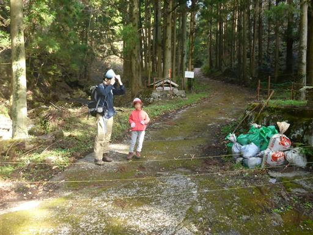
最初は林道を歩いて行く。
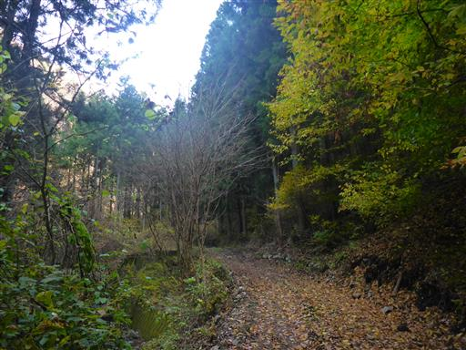
林道に沿って陰気な川が流れている。
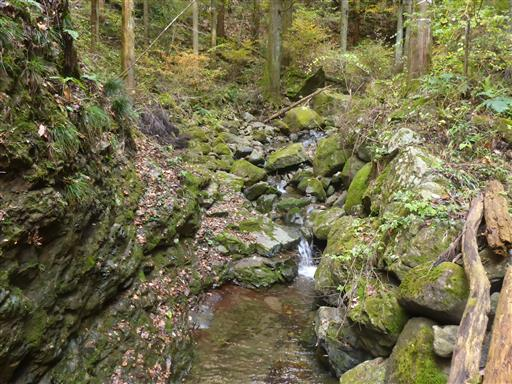
しばらく歩くと林道終点に到着し、登山道が始まる。
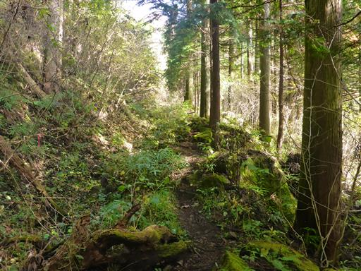
沢沿いの荒れた道を登って行く。
あまり整備されいる感じはなく、道は分かりにくい。
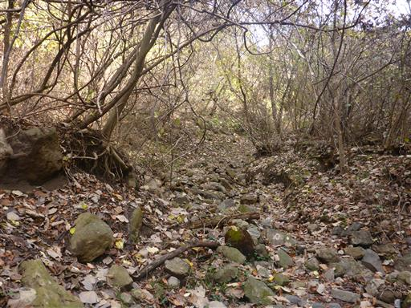
大きな岩壁の元を歩く。岩がちな地形は西上州の山の特徴だ。
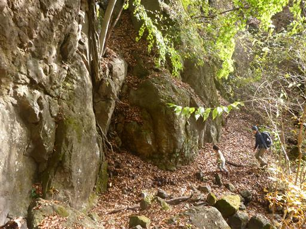
高さ5m程の小さな滝が現れる。水は滴り落ちるような流れで、これも陰気な滝だ。
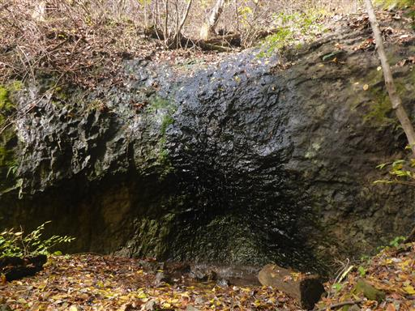
滝の横にある岩場を登る。岩が湿っていて滑りやすいため登りにくい。
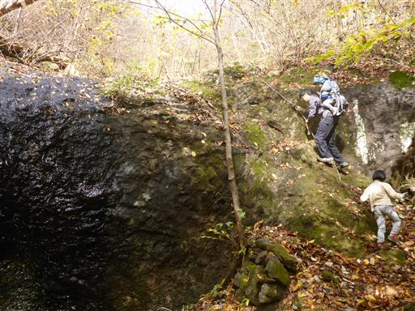
じじ岩ばば岩との分岐点に到着する。
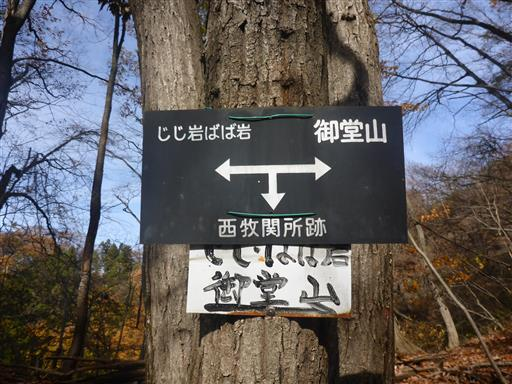
この辺りは紅葉が少しだけ残っている。
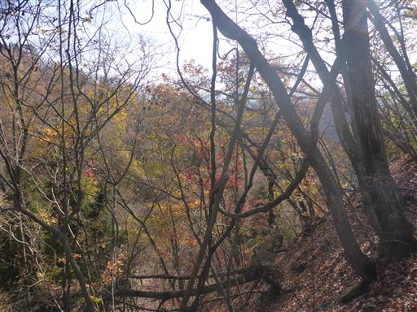
じじ岩ばば岩を先に見学することにする。
この道は痩せ尾根で、結構怖い道だ。
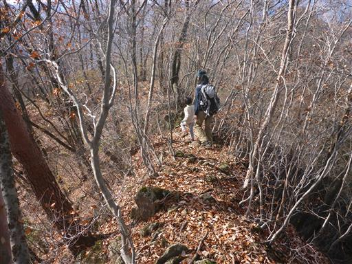
巨大な岩に突き当たったところで、岩を右から巻いて行く。
見上げると巨大な岩壁が聳え立っている。
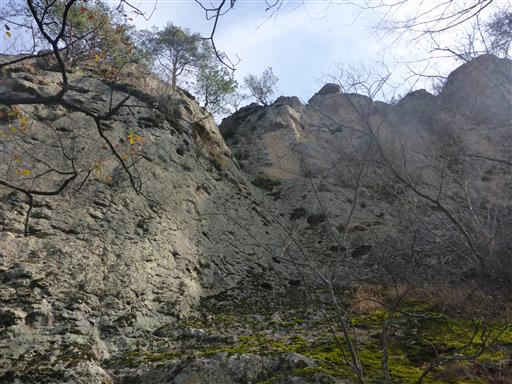
急斜面を手をついて登って行く。
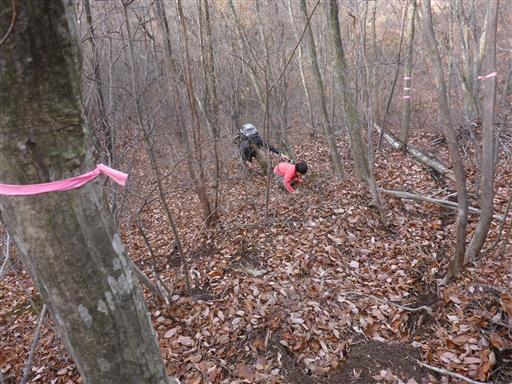
展望台に到着する。こちらはじじ岩。立派な岩峰だ。
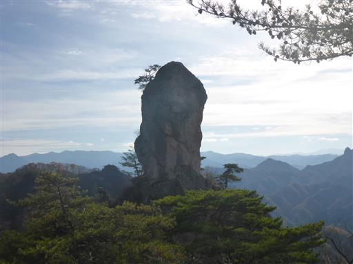
こちらがばば岩。かなり細長い岩峰で、まさに奇岩だ。
何年後かには真中で折れてしまいそうだ。
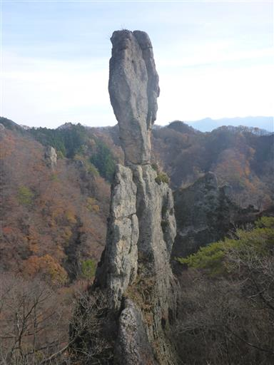
その他、西上州の山々の展望が広がる。
遠くのテーブル状の山は西上州の名峰・荒船山だ。
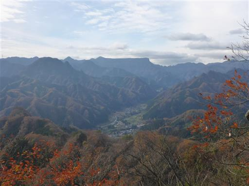
再び痩せ尾根を辿って分岐点まで戻る。
展望台までの往復は緊張の続く難しい道だった。
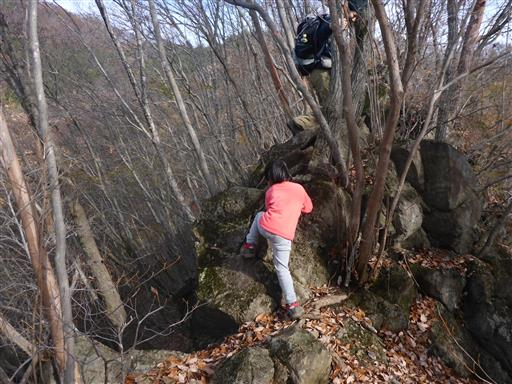
分岐点に戻ってきたところで休憩をとる。
ここには木の幹を並べて作られたベンチがある。
おやつ休憩を取るつもりだったが、おやつを食べた後に、
「おにぎりも食べる」と言い出したため、昼食休憩になってしまった…
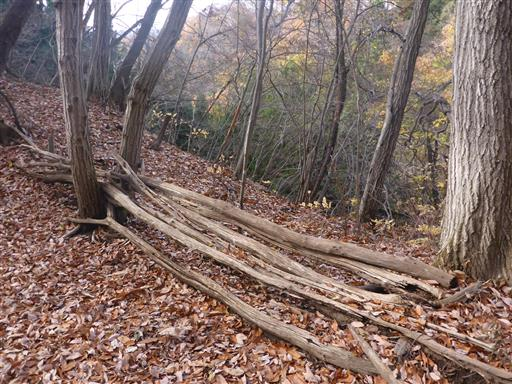
昼食休憩をとったら、山頂に向けて歩き始める。ここからしばらくは息子も歩く。
落ち葉がかなり積もっていて、滑りやすく歩きにくい。
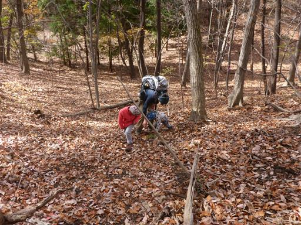
遠くの方にも、じじ岩ばば岩に良く似た岩峰が見えている。
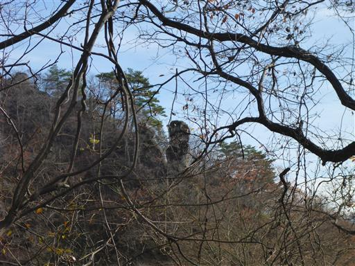
山頂直下はかなりの急斜面だ。ロープに捕まりながら登って行く
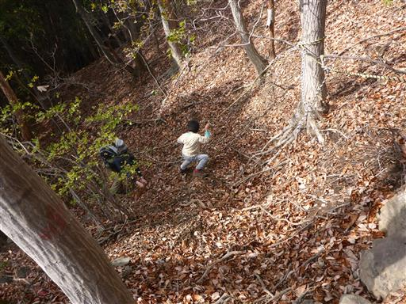
御堂山の山頂に到着する。標高878m。
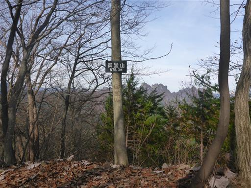
山頂はあまり広くなく、展望も北方に妙義山が少し見えるのみ。
少し休憩したら、すぐに下山を開始する。
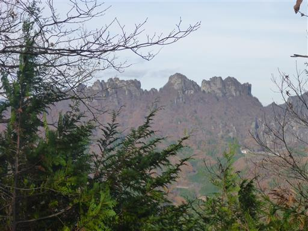
この山には栗がたくさん落ちていて、栗が好きな娘が拾いながら歩いている。
ドングリと違い栗は拾うのに時間がかかる…
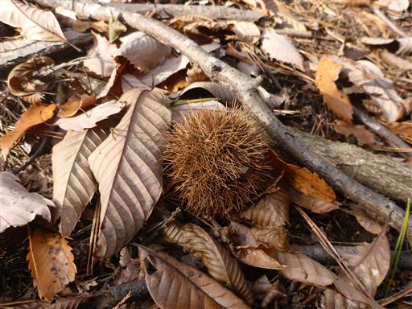
切り株が並んでいる。少々不気味な光景だ。
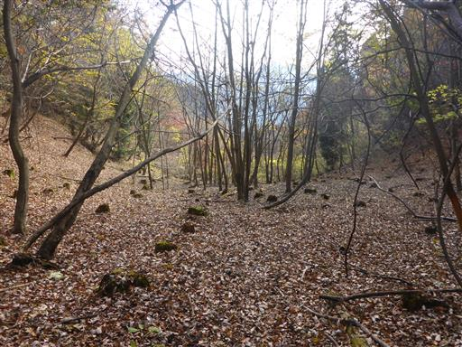
林道終点でおやつ休憩を取った後、最後の林道は息子を歩かせる。
車に着いたところで、息子が眠っている間に帽子を落としてしまっていたことに気付いたが、
ありがたい事に、後続の登山者が拾ってくれていて、渡してくれた。
御堂山はじじ岩ばば岩が目立つものの、山としては非常に地味だった。
登山道の難易度は高めだったが、楽しい難しさというより、嫌らしい難しさだった。
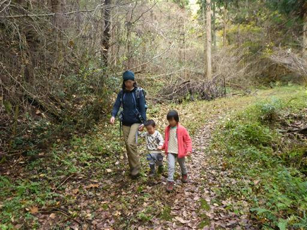